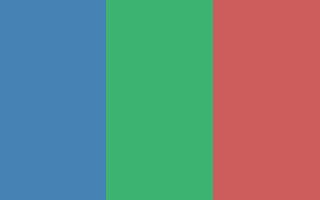

Attendance
Present: Avery, Jordan, Sam, Riley, Morgan. Absent (excused): Casey.
- Avery Wong — facilitator
- Jordan Lee — notes
- Sam Patel — engineering
- Riley Chen — design
- Morgan Diaz — PM
Agenda
We agreed to keep the session to 45 minutes and focus on outcomes, not tooling debates.
- Recap goals for the Pomodoro Timer MVP
- Review open questions from last week
- Sketch flows for start / pause / reset
- Decide what we ship in sprint one
Unfinished business
From last meeting
We still owe a written definition of focus session
versus break
so analytics stay consistent.
Riley will post a one-paragraph glossary in the shared doc by Wednesday.
Why this matters
Without shared terms, reports will disagree on completion rates. The glossary removes ambiguity for future features like long breaks and custom timers.
New business
Timer behavior
The team prefers a single primary action on the home screen: start focus. Secondary actions (skip break, edit length) should stay one tap away, not buried in settings.
Accessibility
We will mirror the MDN accessibility overview as a checklist while we prototype. Keyboard control and visible focus states are non-negotiable for the MVP.
Miscellaneous comments / questions / concerns
- Morgan asked whether we need accounts for v1; consensus: no, local-first only.
- Sam raised offline support; we will timebox a spike next week.
- Open question: should breaks play sound by default? Tabled until user research returns.
Diagrams, architecture, and recordings
Whiteboard snapshot of the proposed screen flow (placeholder diagram for the lab).

Audio recording
Clip captured at the end of the meeting for async review (separate audio file per lab instructions).
Video recording
Short screen share walkthrough of the whiteboard flow.